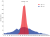

variance

Definition: In probability theory and statistics, variance is the expectation of the squared deviation of a random variable from its population mean or sample mean. Variance is a measure of dispersion, meaning it is a measure of how far a set of numbers is spread out from their average value. Variance has a central role in statistics, where some ideas that use it include descriptive statistics, statistical inference, hypothesis testing, goodness of fit, and Monte Carlo sampling. Variance is an important tool in the sciences, where statistical analysis of data is common. The variance is the square of the standard deviation, the second central moment of a distribution, and the covariance of the random variable with itself, and it is often represented by
Source: Wikipedia
Wikipedia Page
Wikidata Page